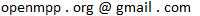

OpenM++: open source microsimulation platform
- OpenM++ is an open source microsimulation platform inspired by and compatible with Modgen. OpenM++, compare to it close source predecessor, has many distinct features like portability, scalability and open source. It is not a copy of the Modgen, but a new, functionally equal implementation of publicly available specifications. OpenM++ does not depend on Modgen, does not use Modgen and does not share any source code with Modgen. On the other hands, you can compile and run Modgen models by using OpenM++.
- Downloads:
-
OpenM++ binaries and source code: latest release on GitHub
Please use Docker images to build most recent openM++ version from source code. - Docker:
-
Docker images to run openM++ models: openmpp/openmpp-run
Docker images to build openM++ binaries: openmpp/openmpp-build
- Source Code:
-
Main part of openM++ source code
OpenM++ Go Library and Tools source code
openMpp R package source code
Python examples source code
Docker files source code
MacOS-specific: source code
UI (beta) source code - Documentation:
- Project documentation can be found at our wiki.
- Go Libary:
- OpenM++ Go Library and Tools documenation:

- R Package:
- openMpp R package documenation.
- Runtime library:
- OpenM++ Runtime library source code documenation.
- Compiler:
- OpenM++ Compiler source code documenation.
- License:
-
OpenM++ is open source project licensed under MIT license terms.
Free to use, copy, modify, merge, publish, distribute, sublicense, and/or sell this software, for any purpose, commercial or non-commercial.
Please contact us at:  - Privacy and User data:
-
OpenM++ do not collect, sell or share any user data with anyone.
Some openM++ web-sites protected by login page where user may choose third party authentication provider (Google, GitHub, GitLab, etc.). As result, login information (for example, user name or e-mail address) would be shared with openM++ web-site for duration of user session. This login information in form of JWT token passed over encrypted channel between browser and web-server. OpenM++ authenticate the user based on this login information.
As it is today openM++ do not store any user data. However, in the future, if your organization would like to setup user authorization inside of openM++ then both parties: your organization and openM++ has to establihed privacy policy to guard user data.